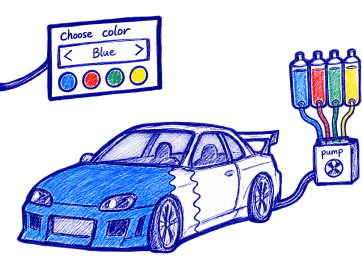
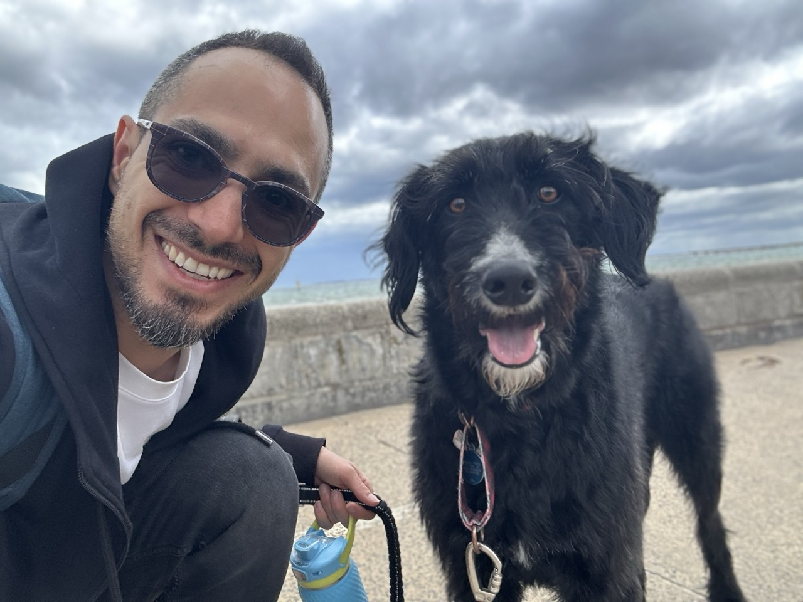
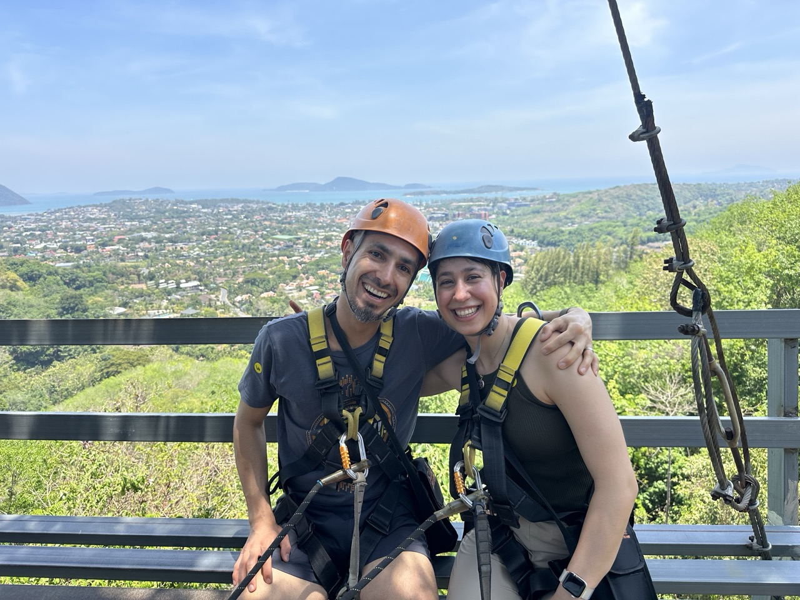
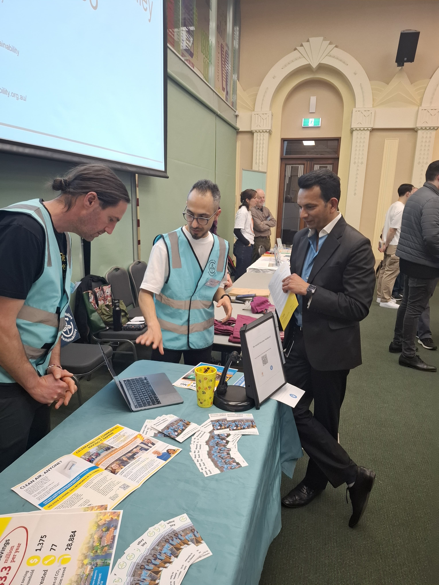

About Morty Akard
What if this worked differently?

When I was a kid, I spent a lot of time playing games like Need for Speed: Most Wanted and GTA. I remember wondering why changing a car’s colour was so easy in a game but not in real life.
So I started imagining how it could work.
In my head, the car had its normal body with a transparent layer on top. Coloured liquid could flow between them, and with the press of a button, the whole car could slowly change colour.
I kept thinking about the idea: where the colours would be stored, how the liquid would move, and how I could make the system work better. Sometimes, days later, I’d suddenly think of a different solution and change it again in my head.
The colour-changing car was only one example. Whenever I wanted something that didn’t exist, or wished something worked differently, I usually started imagining my own version.
That curiosity eventually led me to study IT, explore software development and learn to code. Somewhere along the way, I became just as interested in people’s experience of technology as I was in the technology itself.
That’s what led me to UX and product design.
The process felt familiar: start with an idea, question it, change it and try again. But design also taught me something I hadn’t really considered as a kid: what made sense to me wasn’t necessarily what would make sense to someone else.
My childhood ideas had one user: me. If they worked in my head, that was enough. Design taught me to take those ideas out of my imagination, put them in front of people, and let what I learned shape the next version.
Today, I enjoy taking something complicated or unclear and finding ways to make it simpler and more natural to use. My background in IT and coding still influences how I think—I’m interested in both what people experience on the screen and what is happening behind it.
I still find myself asking the same question:
What if this worked differently?
Away from the screen
I love camping, hiking, cycling and rock climbing. Climbing has become a big part of my life because it forces me to focus completely on what is in front of me.
I also enjoy making things with my hands. I’ve made wooden pendants, I grow plants, and there is usually a small project or experiment somewhere around me.
Games are still part of my life too, especially The Legend of Zelda and Prince of Persia. More recently, travelling got me interested in video making as a way to capture the moments I want to remember.





A recent idea
Learning English has been one of the more challenging parts of building a life in Australia. While practising speaking and pronunciation, I often wished the available tools worked differently.
That led me to create LexLuma, a personal project exploring how AI could make language practice more interactive and useful.
Like many of my ideas, it started with noticing something and wondering if it could work differently.
Some ideas become projects. Some remain in my head. Others, like that colour-changing car, stay with me for years.